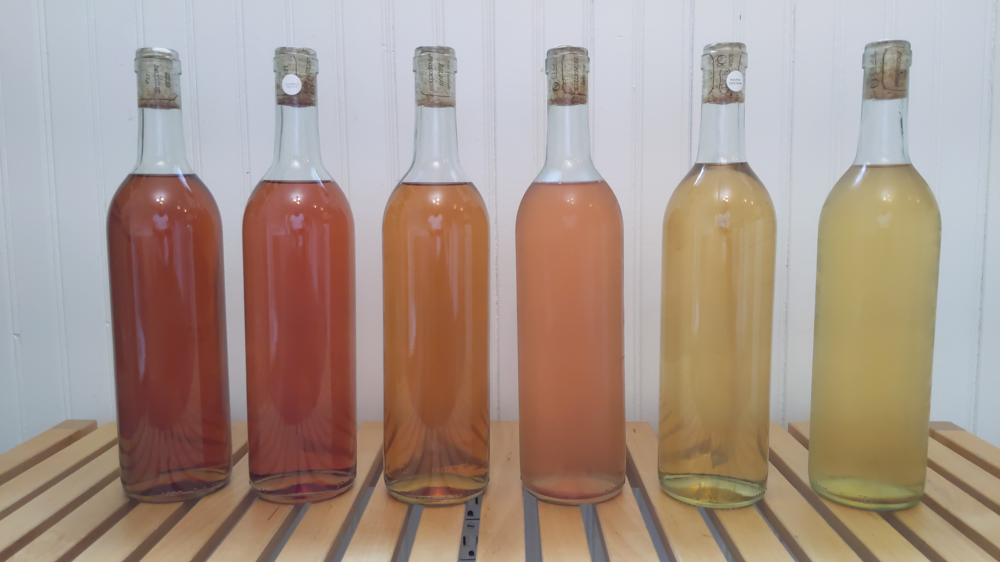
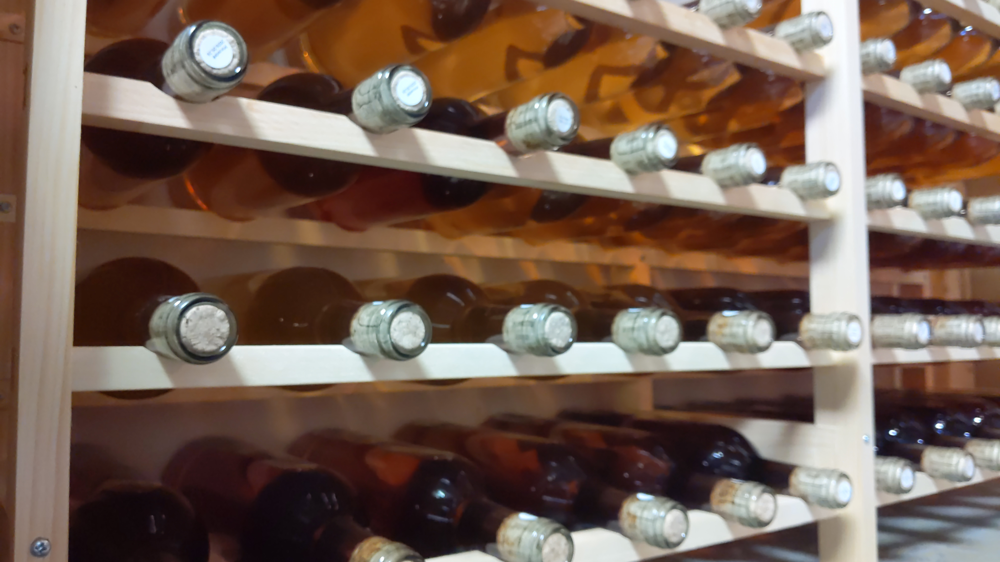

<main class="page">

    <section class="content-card">

        <h1 class="page-title">Who Are We?</h1>

        <div class="image-gallery">
            
            
        </div>

        <h2 class="section-title">The Short Answer:</h2>
        <p class="section-text">We are a family who fell in love with crafting the finest mead fermentation can produce.</p>

        <h2 class="section-title">The Long Answer:</h2>
        <p class="section-text">We started fermenting because we refused to believe that the art of producing alcoholic beverages should be kept only by big companies.</p>
        <p class="section-text">We believe in sharing knowledge that empowers people to take matters into their own hands, so they are no longer dependent on or beholden to big capital.</p> 
        <p class="section-text">We are committed to creating a place where we can reclaim the commons.</p>
        <p class="section-text">Here, we will share our knowledge and practices, so you too can find your freedom from the clutches of big corporations and take back the knowledge that belongs to us, the people!</p>

    </section>
</main>